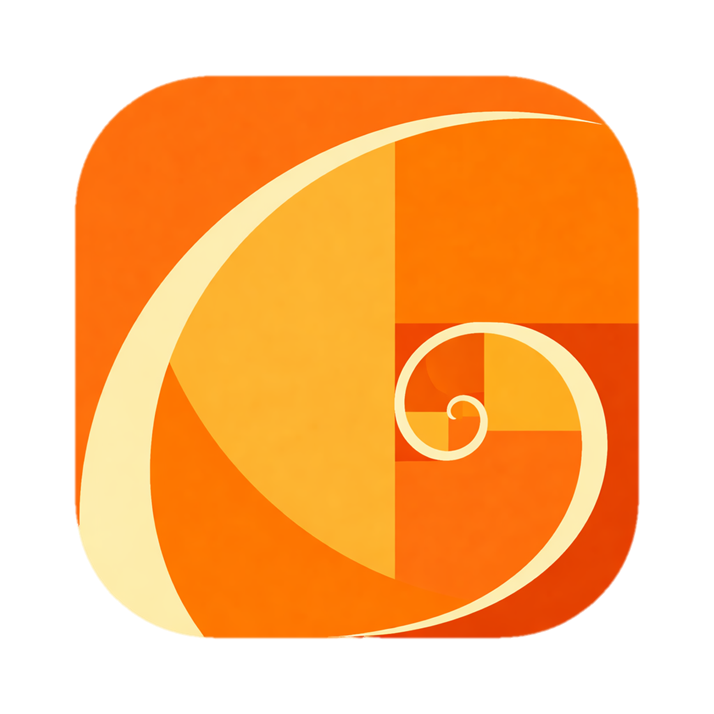
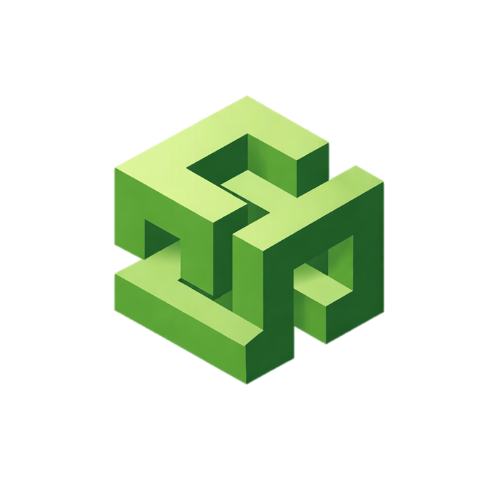
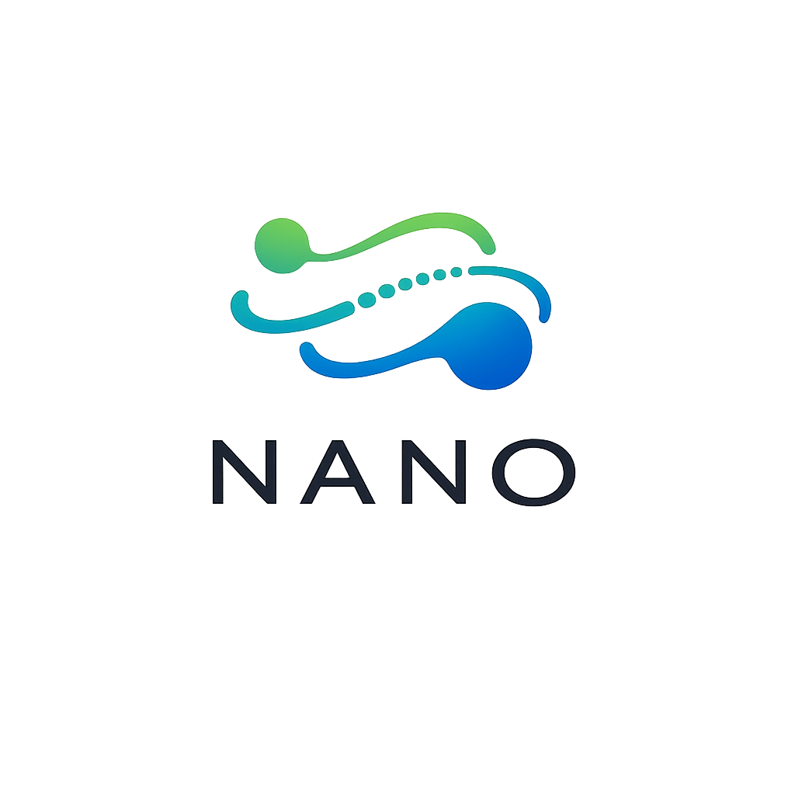
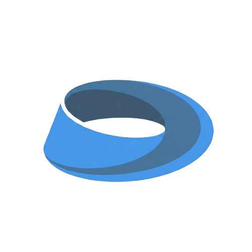

Static URLs for the IEEE SPS at UF work associated with Raul Valle.

IEEE SPS @ UF · curriculum · workshops
IEEE SPS @ UF — curriculum & workshops
Workshop series that connects analysis, probability, and machine learning to applied signal-processing case studies, with materials designed to be approachable for newcomers.
EducationSignal processingJupyter notebooks

IEEE SPS @ UF · audio ML · ICASSP track
Aude — biologically plausible audio scene analysis
Aude develops an end-to-end audio research workflow: collect synchronized microphone-array data, benchmark state-of-the-art baselines, and train models for robust source separation and localization.
Source separationLocalizationMulti-mic data capture

Tools · language + structure · reproducibility
Plato’s Cave
System that extracts structured nodes (claims, evidence, limitations, etc.) from papers and scores them to support literature review and comparison across a collection.
Large language models (LLMs)Research toolingReproducibility

IEEE SPS @ UF · neurotech · human-machine systems
Ergo — EMG/EEG biosignal acquisition + dynamical systems
Ergo integrates biosignal hardware, feature extraction, and simulation to test how control systems move between stable and unstable regimes under cooperating vs. competing subjects and fatigue.
EMG + EEGEmbedded acquisitionDynamical stability analysis

IEEE SPS @ UF · robotics · systems
Nano — robotics stack (Ergo interface)
Robotics project focused on building a reliable hardware-to-software interface layer (instrumentation, control, and real-time data paths), with planned integration points for Ergo.
RoboticsReal-time systemsHardware/software interface

IEEE SPS @ UF · app systems · health analytics
Ora — local-first workout tracker with voice logging
Ora is built to reduce workout logging friction while generating high-quality structured data for ML-assisted progression analysis and coaching workflows.
Local-first dataVoice loggingTraining trend analysis

IEEE SPS @ UF · computer vision · CVPR track
Vie — biologically plausible real-time video scene analysis
Vie investigates real-time machine perception systems that jointly model moving and static objects, with reproducible data engineering and demo-first iteration.
Scene understandingReal-time perceptionDataset + annotation pipeline